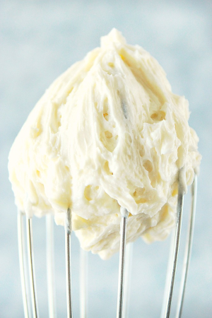

Frosting Type for Cake and Cupcake
From the Fuss-Free Vegan Cookbook


1. Vanilla Frosting

Prep time: 5 minutes || Serving: 3 cups || Rating X/10
Ingredients
- 1/2 vegetable shortening
- 1/2 cup vegan butter
- 3 cups icing sugar - try with 1.5 or 2?
- 1 tsp vanilla
- 1-4 Tbsp non-dairy milk (as required to achieve desired consistency)
Instructions
- Cream together shortening and butter in a stand mixer.
- Mix in icing sugar and vanilla until whipped and creamy.
- Add as much milk is required to get the desired consistency.
- Store in an air-tight container in the fridge for up to one week, or freeze.
2. Chocolate Frosting
Prep time: 5 minutes || Serving: 3 cups || Rating X/10
Ingredients
- 1/2 vegetable shortening
- 1/2 cup vegan butter
- 1 1/4 cups icing sugar
- 1/4 cup cocoa powder
- 1 tsp vanilla
- 1-2 Tbsp non-dairy milk (as required to achieve desired consistency)
Instructions
- Cream together shortening and butter in a stand mixer.
- Mix in icing sugar, cocoa powder, and vanilla until whipped and creamy.
- Add as much milk is required to get the desired consistency.
- Store in an air-tight container in the fridge for up to one week, or freeze.
3. Cream Cheese Frosting
Prep time: 5 minutes || Serving: 3 cups || Rating X/10
Ingredients
- 1/2 vegetable shortening
- 1/2 cup vegan butter
- 3 cups icing sugar - try with 1.5 or 2?
- 1 Tbsp apple cider vinegar
- 2 tsp vanilla
- 1 tsp lemon juice
- 1-4 Tbsp non-dairy milk (as required to achieve desired consistency)
Instructions
- Cream together shortening and butter in a stand mixer.
- Mix in icing sugar, apple cider vinegar, lemon juice, and vanilla until whipped and creamy.
- Add as much milk is required to get the desired consistency.
- Store in an air-tight container in the fridge for up to one week, or freeze.